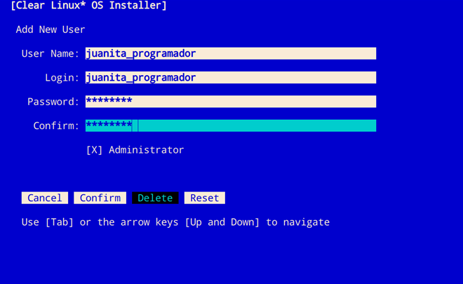

Install Clear Linux* OS from the live server¶
This page explains how to install Clear Linux* OS on bare metal from a bootable USB drive using a live server image.
System requirements¶
Before installing Clear Linux OS, verify that the host system supports the installation:
Download the latest Clear Linux OS live server image¶
Visit our Downloads page.
Download the file
clear-<release number>-live-server.iso, also called the Clear Linux OS Server.Note
<release-number> is the latest Clear Linux OS auto-numbered release.
Follow your OS instructions to create a bootable usb drive.
Install Clear Linux OS on your target system¶
Ensure that your system is configured to boot UEFI. The installation method described below requires a wired or wireless Internet connection with DHCP.
Follow these steps to install Clear Linux OS on the target system:
Insert the USB drive into an available USB slot.
Power on the system.
Open the system BIOS setup menu by pressing the F2 key. Your BIOS setup menu entry point may vary.
Note
Clear Linux OS supports UEFI boot. Some hardware may list UEFI and non-UEFI USB boot entries. In this case, you should select the UEFI boot option.
In the setup menu, enable the UEFI boot and set the USB drive as the first option in the device boot order.
Save these settings and exit.
Reboot the target system.
This action launches the Clear Linux OS installer boot menu, shown in Figure 1.

Figure 1: Clear Linux OS Installer boot menu
With Clear Linux OS highlighted, select Enter.
Launch the Clear Linux OS Installer¶
At the login prompt, enter root.
Follow the onscreen instructions, shown in Figure 2, and enter a temporary password.

Figure 2: root login
Note
If a wireless connection is needed, connect to the network using nmtui before lauching the installer. See the documentation on configuring Wifi with nmtui for more details.
At the root prompt, enter clr-installer and press Enter.

Figure 3: clr-installer command
Minimum installation requirements¶
To fulfill minimum installation requirements, complete the Required options. While not required, we encourage you to apply the Recommended options. Advanced options are optional.
Note
- The Install button is only highlighted after you complete Required options.
{kind=link}
Required options¶
Choose Timezone¶
- From the Main Menu, navigate to Choose Timezone. UTC is the default.
- Select Enter.
- In Select System Timezone, use Up/Down arrows navigate to the desired timezone.
Press Enter to confirm.

Figure 5: Select System Timezone
Choose Language¶
From the Main Menu, navigate to Choose Language.
Select Enter.
In Select System Language, navigate to your desired language.
Press Enter to confirm.

Figure 6: Select System Language
Configure the Keyboard¶
From the Main Menu, select Configure the Keyboard.
Select Enter.
In Select Keyboard, navigate to the desired option.
Select Enter to Confirm.
Optional: In Test keyboard, type text to assure that the keys map to your keyboard.

Figure 7: Select Keyboard menu
Configure Installation Media¶
From the Main Menu, select Configure Installation Media.
Choose an installation method: * Safe Installation * Destructive Installation * Advanced Installation

Figure 8: Select Installation Media
Select Rescan Media to show available installation targets.
Safe Installation¶
Use this method to safely install Clear Linux OS on media with available space, or alongside existing partitions, and accept the Default partition schema. If enough free space exists, safe installation is allowed. See also Troubleshooting below.
Destructive Installation¶
Use this method to destroy the contents of the target device, install Clear Linux OS on it, and accept the Default partition schema.
Note
From the Select Installation Media menu, select Enable Encryption to encrypt the root filesystem for either option above. See also Disk encryption for more information.
Advanced Installation¶
Use this method to manually configure partitions using cgdisk.
This example uses the Default partition schema. The space you allocate for
your root, or additional partitions, may vary.
Navigate to Advanced Installation and press Spacebar.

Figure 9: Advanced installation
If no target media appears, select Rescan Media.
Navigate to Partition and and press Spacebar to launch cgdisk.
Partition codes¶
- ef00 - EFI System
- 8200 - Linux swap
- 8300 - Linux filesystem
boot partition¶
With the free space highlighted in the cgdisk utility, select [New].

Figure 10: Select New
Note
The /boot partition must be VFAT(FAT32).
Where First sector appears, press Enter.
For Size in sectors, type 150M.

Figure 11: Size in sectors
Press Enter.
Enter the hex code ef00 and press Enter.

Figure 12: ef00 partition code
For the partition name, enter CLR_BOOT, the EFI boot partition.

Figure 13: CLR_BOOT
Note
Encryption is not allowed on the CLR_BOOT partition.
Now follow the same process to configure the remaining partitions.
swap partition¶
- Use the Up/Down arrow to select free space.
- Select [New] at bottom and press Enter.
- Under First sector, press Enter.
- For Size in sectors, type 256M, and press Enter.
- Enter the hex code 8200 and press Enter.
- In Enter new partition name…, type CLR_SWAP.
- Press Enter.
root partition¶
Use the Up/Down arrow to select free space.
Select [New] at bottom and press Enter.
Under First sector, press Enter.
For Size in sectors, type in desired size. Optionally, press Enter to use the remaining space available.
Press Enter.
Enter the hex code 8300 and press Enter.
In Enter new partition name…, type: CLR_ROOT. The /root partition must be ext[234] or XFS. If no filesystem exists, the installer will default to VFAT(FAT32) for /boot, and ext4 for all others.
Note
You may also append _F to the partition name to force the formatting.
- CLR_ROOT_F: Force the formatting of the root partition prior to
- use.
- CLR_F_SWAP: Force the formatting of the swap partition prior to
- use; helpful when re-using a partition for swap which was previously formatted for a file system.
- CLR_F_MNT_/data: Force the formatting of the extra data
- partition prior to use
Press Enter.
After all partitions are defined, verify that your partition configuration is similar to Figure 14.

Figure 14: Final partition configuration
Additional partitions (optional)¶
Use the Up/Down arrow to select free space.
Now select [New] at bottom and press Enter.
Under First sector, press Enter.
For Size in sectors, type in desired size.
Note
If you do not specify a size, it will use the remaining space.
Press Enter.
Enter the hex code 8300. Then press Enter.
In Enter new partition name…, type: CLR_MNT_<mount_point>. For example, replace <mount_point> with /home, shown in Figure 15.

Figure 15: CLR_MNT
Note
If formatting is desired, the _F must precede _MNT.
Alternatively, you may create CLR_MNT_/srv or other partitions.
Write configuration to disk¶
- When you’re satisfied with the partition configuration, press the Right Arrow until [Write] is highlighted.
- Press Enter.
- When the prompt appears asking if you want to write the partition table to disk, type “yes”.
- Finally, select [Quit].
Disk encryption¶
For greater security, disk encryption is supported using LUKS for the any partition except /boot on Clear Linux OS. To encrypt the root partition, see the example below. Encryption is optional.
Encryption Passphrase¶
Clear Linux OS uses a single passphrase for encrypted partitions. Additional keys may
be configured post-installation using the cryptsetup tool.
Optional: Select [X] Enable encryption to encrypt the root partition, as shown in Figure 16.

Figure 16: Encrypt partition
The Encryption Passphrase dialog appears.
Note
Minimum length is 8 characters. Maximum length is 94 characters.
Enter the same passphrase in the first and second field.
Navigate to Confirm and press Enter.
Note
Confirm is only highlighted if passphrases match.
{kind=link}
Manage User¶
Add New User¶
In Required Options, select Manage User.
Select Add New User as shown in Figure 18.
Optional: Enter a User Name.
Figure 19: User Name
Enter a Login.
Note
The User Login must be alphanumeric and can include hyphens and underscores. Maximum length is 31 characters.
Enter a Password.
In Confirm, enter the same password.
The Administrator checkbox is selected by default.
Note
Selecting Administrator enables sudo privileges for the user. For the installation to proceed, at least one user must be assigned as an Administrator.
Select Confirm. To reset the form, select Reset.
In Manage User, navigate to Confirm.
With Confirm highlighted, select Enter.
{kind=link}
{kind=link}
Modify / Delete User¶
In Manage User, navigate to the user you wish to modify until highlighted, as shown in Figure 20.
Select Enter to modify the user.
Modify user details as desired.
Navigate to Confirm until highlighted.
Note
Optional: Select Reset to rest the form.
Select Confirm to save the changes you made.
Optional: In Modify User, to delete the user, navigate to the Delete button and select Enter.
{kind=link}
{kind=link}
You are returned to Manage User.
- Navigate to Confirm until highlighted.
- Select Enter to complete Manage User options.
Telemetry¶
Telemetrics is a Clear Linux OS feature that reports failures and crashes to the Clear Linux OS development team for improvements.
Select your desired option on whether to participate in telemetry.
In the Main Menu, navigate to Telemetry and select Enter.
Select Tab to highlight your choice.
Select Enter to confirm.

Figure 22: Enable Telemetry
Recommended options¶
After you complete the Required options, we highly recommend completing some Advanced options:
- Assign Hostname Simplify your development environment
Skip to finish installation¶
After selecting values for all Required options, you may skip to Finish installation.
Otherwise, continue below. In the Main Menu, select Advanced options for additional configuration.
Advanced options¶
Configure Network Interfaces¶
By default, Clear Linux OS is configured to automatically detect the host network interface using DHCP. However, if you want to use a static IP address or if you do not have a DHCP server on your network, follow these instructions to manually configure the network interface. Otherwise, default network interface settings are automatically applied.
Note
If DHCP is available, no user selection may be required.
Navigate to Configure Network Interfaces and select Enter.
Navigate to the network interface you wish to change.
When the desired interface is highlighted, select Enter to edit.
Note
Multiple network interfaces may appear.

Figure 23: Configure Network Interfaces
Notice Automatic / dhcp is selected by default (at bottom).
Optional: Navigate to the checkbox Automatic / dhcp and select Spacebar to deselect.

Figure 24: Network interface configuration
Navigate to the appropriate fields and assign the desired network configuration.
To save settings, navigate to Confirm and select Enter.
Note
To revert to previous settings, navigate to the Cancel and select Enter.
Upon confirming network configuration, the Testing Networking dialog appears. Assure the result shows success. If a failure occurs, your changes will not be saved.
Upon confirmation, you are returned to Network interface settings.
Navigate to and select Main Menu.
Optional: Skip to Finish installation.
Proxy¶
Clear Linux OS automatically attempts to detect proxy settings, as described in Autoproxy. If you need to manually assign proxy settings, follow this instruction.
From the Advanced options menu, navigate to Proxy, and select Enter.
Navigate to the field HTTPS Proxy.

Figure 25: Configure the network proxy
Enter the desired proxy address and port using conventional syntax, such as: http://address:port.
Navigate to Confirm and select Enter.
To revert to previous settings, navigate to Cancel and select Cancel.
Optional: Skip to Finish installation.
Test Network Settings¶
To manually assure network connectivity before installing Clear Linux OS, select Test Network Settings and select Enter.
Note
If using the off-line installer, this option is not available.
A progress bar appears as shown in Figure 26.

Figure 26: Testing Networking dialog
Note
Any changes made to network settings are automatically tested during configuration.
Optional: Skip to Finish installation.
Select Additional Bundles¶
This option is only available with a valid network connection. Bundle selection is disabled if no network connection exists.
On the Advanced menu, select Select Additional Bundles.
Navigate to the desired bundle using Tab or Up/Down arrows.
Select Spacebar to select the checkbox for each desired bundle.

Figure 27: Bundle Selection
Optional: To start developing with Clear Linux OS, we recommend adding
os-clr-on-clr.Navigate to and select Confirm.
You are returned to the Advanced options menu.
Optional: Skip to Finish installation.
Kernel Command Line¶
For advanced users, Clear Linux OS provides the ability to add or remove kernel arguments. If you want to append a new argument, enter the argument here. This argument will be used every time you install or update a new kernel.
In Advanced Options, select Tab to highlight Kernel Command Line.
Select Enter.

Figure 28: Kernel Command Line
Choose from the following options.
- To add arguments, enter the argument in Add Extra Arguments.
- To remove an argument, enter the argument in Remove Arguments.
Select Confirm.
Optional: Skip to Finish installation.
Kernel Selection¶
Select a kernel option. By default, the latest kernel release is selected. Native kernel is shown in Figure 29.
To select a different kernel, navigate to it using Tab.

Figure 29 Kernel selection
Select Spacebar to select the desired option.
Navigate to Confirm and select Enter.
Optional: Skip to Finish installation.
Swupd Mirror¶
If you have your own custom mirror of Clear Linux OS, you can add its URL.
In Advanced Options, select Swupd Mirror.
To add a local swupd mirror, enter a valid URL in Mirror URL:
Select Confirm.

Figure 30: Swupd Mirror
Optional: Skip to Finish installation.
Assign Hostname¶
In Advanced Options, select Assign Hostname.
In Hostname, enter the hostname only (excluding the domain).
Note
Hostname does not allow empty spaces. Hostname must start with an alphanumeric character but may also contain hyphens. Maximum length of 63 characters.

Figure 31: Assign Hostname
Navigate to Confirm until highlighted.
Select Confirm.
Optional: Skip to Finish installation.
Automatic OS Updates¶
Automatic OS updates are enabled by default. In the rare case that you need to disable automatic software updates, follow the onscreen instructions, shown in Figure 32.
In Advanced Options, select Automatic OS Updates.
Select the desired option.

Figure 32: Automatic OS Updates
You are returned to the Main Menu.
Save Configuration Settings¶
In Advanced Options, select Save Configuration Settings.
A dialog box shows the installation configuration was saved to
clr-installer.yaml
Figure 33: Automatic OS Updates
Use the
clr-installer.yamlfile to install Clear Linux OS, with the same configuration, on multiple targets.
Finish installation¶
When you are satisfied with your installation configuration, navigate to Install and select Enter.
Select reboot.
Note
If you do not assign an administrative user, upon rebooting, enter root and set the root password immediately.
When the system reboots, remove any installation media present.
{kind=link}
Troubleshooting¶
For Configure Installation Media¶
If a warning message appears that no media or space is available after entering Configure Installation Media:
- Verify that target media has enough free space.
- Confirm the USB is properly connected to and mounted on target media.
- Review the size of existing partitions on the target media:
- Linux* OS: lsblk -a
- Windows* OS: diskpart, then list disk
- macOS* platform: diskutil list
Erase LVM Partitions Before Installing Clear Linux OS¶
If you’re planning to install Clear Linux OS on a drive that has LVM partitions, you must erase them first before using clr-installer.
Here is an example of a drive (/dev/sda) with LVMs:
NAME MAJ:MIN RM SIZE RO TYPE MOUNTPOINT
loop0 7:0 0 627.6M 1 loop
sda 8:0 0 335.4G 0 disk
├─sda1 8:1 0 200M 0 part
├─sda2 8:2 0 1G 0 part
└─sda3 8:3 0 334.2G 0 part
├─LVM-root 252:0 0 70G 0 lvm
├─LVM-home 252:1 0 248.4G 0 lvm
└─LVM-swap 252:2 0 15.7G 0 lvm
If you do not erase the LVMs first, you will encounter a clr-installer error like this:
root@clr-live~ # clr-installer
Please report this crash using GitHub Issues:
https://github.com/clearlinux/clr-installer/issues
Include the following as attachments to enable diagnosis:
/root/pre-install-clr-installer.yaml
/root/clr-installer.log
You may need to remove any personal data of concern from the attachments.
The Installer will now exit.
exit status 1
Error Trace:
errors.Wrap()
errors/errors.go:91
storage.makeFs()
storage/ops.go:79
The quickest and simplest method to erasing the LVMs is to execute these commands:
sudo sgdisk -Z /dev/<device>
sudo partprobe
sudo dmsetup remove_all --force
sudo partprobe